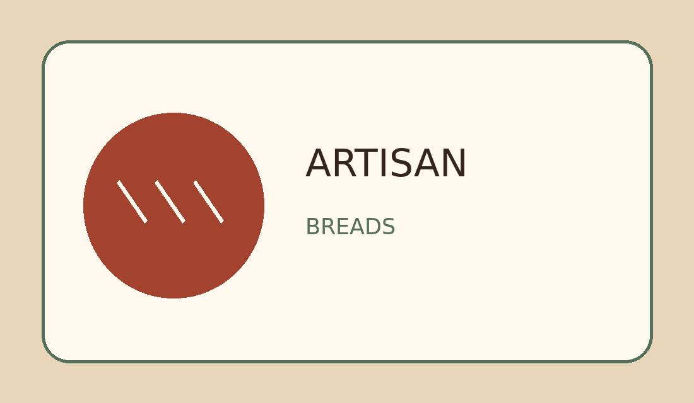
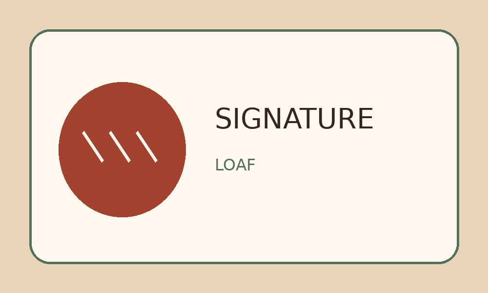

Our Breads, Pastries, and Cakes
From everyday breakfast to special occasions, our bakery offers something handmade for every table. Prices below are sample estimates and may change.
Artisan Breads
Freshly baked loaves with crisp crusts and soft centers: about $6-$12 each.


Morning Pastries
Buttery and sweet options for breakfast or an afternoon treat: approximately $3-$7 per pastry.
Celebration Cakes
Simple cakes and custom requests for birthdays and gatherings: starting around $30, depending on size and decoration.
Send a preorder request with your item details and preferred pickup date. We will follow up to discuss availability.
Build Your Bakery Favorites List
Save the items you love, and we will remember your choices on this device. You can include them when you send a preorder inquiry.
Loading your favorites…
Favorites are saved only in this browser. They are not orders or reservations.